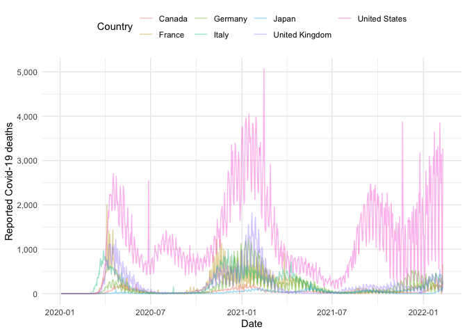

Interface to subnational and national level COVID-19 data sourced from both official sources, such as Public Health England in the UK, and from other COVID-19 data collections, including the World Health Organisation (WHO), European Centre for Disease Prevention and Control (ECDC), John Hopkins University (JHU), Google Open Data and others. This package is designed to streamline COVID-19 data extraction, cleaning, and processing from a range of data sources in an open and transparent way. This allows users to inspect and scrutinise the data, and tools used to process it, at every step. For all countries supported, data includes a daily time-series of cases and, wherever available, data on deaths, hospitalisations, and tests. National level data is also supported using a range of data sources.
Installation
Install from CRAN:
install.packages("covidregionaldata")Install the stable development version of the package with:
install.packages("covidregionaldata",
repos = "https://epiforecasts.r-universe.dev"
)Install the unstable development version of the package with:
remotes::install_github("epiforecasts/covidregionaldata")Quick start

Load covidregionaldata, dplyr, scales, and ggplot2 (all used in this quick start),
Setup data caching
This package can optionally use a data cache from memoise to locally cache downloads. This can be enabled using the following (this will use the temporary directory by default),
start_using_memoise()
#> Using a cache at: /var/folders/68/22ndk9854tq394wl_n1cxzlr0000gn/T//RtmpylL81UTo stop using memoise use,
and to reset the cache (required to download new data),
National data
To get worldwide time-series data by country (sourced from the World Health Organisation (WHO) by default but also optionally from the European Centre for Disease Control (ECDC), John Hopkins University, or the Google COVID-19 open data project), use:
nots <- get_national_data()
#> Downloading data from https://covid19.who.int/WHO-COVID-19-global-data.csv
#> Cleaning data
#> Processing data
nots
#> # A tibble: 182,253 × 15
#> date un_region who_region country iso_code cases_new cases_total deaths_new deaths_total recovered_new
#> <date> <chr> <chr> <chr> <chr> <dbl> <dbl> <dbl> <dbl> <dbl>
#> 1 2020-01-03 Asia EMRO Afghan… AF 0 0 0 0 NA
#> 2 2020-01-03 Europe EURO Albania AL 0 0 0 0 NA
#> 3 2020-01-03 Africa AFRO Algeria DZ 0 0 0 0 NA
#> 4 2020-01-03 Oceania WPRO Americ… AS 0 0 0 0 NA
#> 5 2020-01-03 Europe EURO Andorra AD 0 0 0 0 NA
#> 6 2020-01-03 Africa AFRO Angola AO 0 0 0 0 NA
#> 7 2020-01-03 Americas AMRO Anguil… AI 0 0 0 0 NA
#> 8 2020-01-03 Americas AMRO Antigu… AG 0 0 0 0 NA
#> 9 2020-01-03 Americas AMRO Argent… AR 0 0 0 0 NA
#> 10 2020-01-03 Asia EURO Armenia AM 0 0 0 0 NA
#> # … with 182,243 more rows, and 5 more variables: recovered_total <dbl>, hosp_new <dbl>, hosp_total <dbl>,
#> # tested_new <dbl>, tested_total <dbl>This can also be filtered for a country of interest,
g7 <- c(
"United States", "United Kingdom", "France", "Germany",
"Italy", "Canada", "Japan"
)
g7_nots <- get_national_data(countries = g7, verbose = FALSE)Using this data we can compare case information between countries, for example here is the number of deaths over time for each country in the G7:
g7_nots %>%
ggplot() +
aes(x = date, y = deaths_new, col = country) +
geom_line(alpha = 0.4) +
labs(x = "Date", y = "Reported Covid-19 deaths") +
scale_y_continuous(labels = comma) +
theme_minimal() +
theme(legend.position = "top") +
guides(col = guide_legend(title = "Country"))
Subnational data
To get time-series data for subnational regions of a specific country, for example by level 1 region in the UK, use:
uk_nots <- get_regional_data(country = "UK", verbose = FALSE)
uk_nots
#> # A tibble: 9,893 × 26
#> date region region_code cases_new cases_total deaths_new deaths_total recovered_new recovered_total
#> <date> <chr> <chr> <dbl> <dbl> <dbl> <dbl> <dbl> <dbl>
#> 1 2020-01-11 North Ea… E12000001 NA NA NA NA NA NA
#> 2 2020-01-11 North We… E12000002 NA NA NA NA NA NA
#> 3 2020-01-11 Yorkshir… E12000003 NA NA NA NA NA NA
#> 4 2020-01-11 East Mid… E12000004 NA NA NA NA NA NA
#> 5 2020-01-11 West Mid… E12000005 NA NA NA NA NA NA
#> 6 2020-01-11 East of … E12000006 NA NA NA NA NA NA
#> 7 2020-01-11 London E12000007 NA NA NA NA NA NA
#> 8 2020-01-11 South Ea… E12000008 NA NA NA NA NA NA
#> 9 2020-01-11 South We… E12000009 NA NA NA NA NA NA
#> 10 2020-01-11 England E92000001 NA NA NA NA NA NA
#> # … with 9,883 more rows, and 17 more variables: hosp_new <dbl>, hosp_total <dbl>, tested_new <dbl>,
#> # tested_total <dbl>, areaType <chr>, cumCasesByPublishDate <dbl>, cumCasesBySpecimenDate <dbl>,
#> # newCasesByPublishDate <dbl>, newCasesBySpecimenDate <dbl>, cumDeaths28DaysByDeathDate <dbl>,
#> # cumDeaths28DaysByPublishDate <dbl>, newDeaths28DaysByDeathDate <dbl>, newDeaths28DaysByPublishDate <dbl>,
#> # newPillarFourTestsByPublishDate <lgl>, newPillarOneTestsByPublishDate <dbl>,
#> # newPillarThreeTestsByPublishDate <dbl>, newPillarTwoTestsByPublishDate <dbl>Now we have the data we can create plots, for example the time-series of the number of cases for each region:
uk_nots %>%
filter(!(region %in% "England")) %>%
ggplot() +
aes(x = date, y = cases_new, col = region) +
geom_line(alpha = 0.4) +
labs(x = "Date", y = "Reported Covid-19 cases") +
scale_y_continuous(labels = comma) +
theme_minimal() +
theme(legend.position = "top") +
guides(col = guide_legend(title = "Region"))
See get_available_datasets() for supported regions and subregional levels. To view what datasets we currently have subnational data for, along with their current status, check the supported countries page or build the supported countries vignette.
For further examples see the quick start vignette. Additional subnational data are supported via the JHU() and Google() classes. Use the available_regions() method once these data have been downloaded and cleaned (see their examples) for subnational data they internally support.
Citation
If using covidregionaldata in your work please consider citing it using the following,
#>
#> To cite covidregionaldata in publications use:
#>
#> Joseph Palmer, Katharine Sherratt, Richard Martin-Nielsen, Jonnie Bevan, Hamish Gibbs, Sebastian
#> Funk and Sam Abbott (2021). covidregionaldata: Subnational data for COVID-19 epidemiology, DOI:
#> 10.21105/joss.03290
#>
#> A BibTeX entry for LaTeX users is
#>
#> @Article{,
#> title = {covidregionaldata: Subnational data for COVID-19 epidemiology},
#> author = {Joseph Palmer and Katharine Sherratt and Richard Martin-Nielsen and Jonnie Bevan and Hamish Gibbs and Sebastian Funk and Sam Abbott},
#> journal = {Journal of Open Source Software},
#> year = {2021},
#> volume = {6},
#> number = {63},
#> pages = {3290},
#> doi = {10.21105/joss.03290},
#> }Development

This package is the result of work from a number of contributors (see contributors list here). We would like to thank the CMMID COVID-19 working group for insightful comments and feedback.
We welcome contributions and new contributors! We particularly appreciate help adding new data sources for countries at sub-national level, or work on priority problems in the issues. Please check and add to the issues, and/or add a pull request. For more details, start with the contributing guide. For details of the steps required to add support for a dataset see the adding data guide.